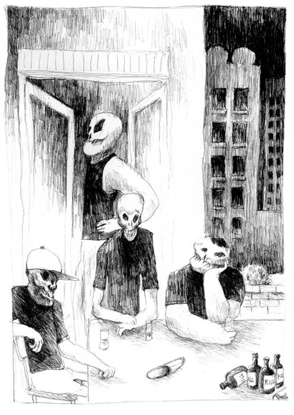

Kulübedeki sabahın üzerinden üç saat geçti.
Siyah yüzlü bir adam kendisine uzatılan banknotu alırken konuştu:
“Bütün eşyalar senindir.”
Hakan, elindeki banknota bakarak emanetçinin deposundan çıktı. Taze güneş, gözbebeklerini büyüttü. Yürüdü. Aradığı tabelayı buldu. Altındaki kapıdan içeri girdi.
“Bir dövme istiyorum. Sol omzuma.”
Hakan, elindeki kartı ankesörlü telefonun karnına soktu. Parmaklarının hafızasındaki tuşlara bastı. Bekledi.
“Alo.”
“Anne.”
“Hakan?”
“Evet anne, benim... Lütfen beni kurtarın.”
Hakan ağlamaya, annesi konuşmaya başladı. Hakan, annesinin bütün şartlarını kabul etti.
“Söz veriyorum anne. Bir daha sizi hiç üzmeyeceğim. Size layık olmak için her şeyi yapacağım. Ne olur, beni kabul edin.”
Hakan’ın annesi sancılandı ve çocuğunu ikinci kez doğurdu:
“Eve gel Hakan. Seni bekliyoruz.”
On saatlik bir yolculuğun ardından, ücreti ailesi tarafından ödenmiş olan otobüs koltuğundan kalkan Hakan, ücreti ailesi tarafından ödenecek olan bir taksi koltuğuna oturdu.
İçinde, ailesinin yaşadığı daireyi barındıran apartmanın asansörüne bindi. Üzerinde “6” yazan düğmeye bastı. Olduğu yerde döndü. Gömleğinin düğmelerini açıp sol yakasını omzuna indirdi. Asansörün aynasında, omzundaki kelimeyle göz göze geldi. Daktilo harfleriyle yazılmış ve derisine işlenmesinin üzerinden yirmi dört saat bile geçmediği için hâlâ simsiyah olan kelimeyi, kurumuş dudaklarını çatlatan bir gülümsemeyle okudu. Üç harflik bir kelimeydi: “HİÇ.”
